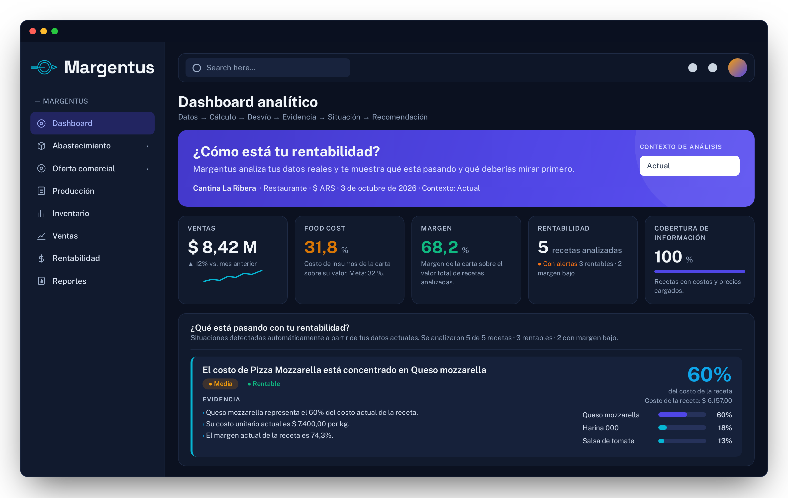

Construir inteligencia de rentabilidad para la gastronomía
Margentus nace de un problema concreto de la operación gastronómica: convertir información dispersa y conocimiento especializado en decisiones que puedan ser comprendidas y utilizadas por cualquier negocio.
Registro público del proyecto: origen, modelo, metodología y estado. Sin resultados ni métricas que no existan.
01Origen
Una idea nacida desde la operación
Margentus no arranca con una idea de mercado ni con una tecnología elegida. Arranca con una observación repetida durante años de trabajo en administración, gestión hotelera y control de costos de operaciones gastronómicas.
En ese trabajo aparece siempre la misma característica: la información económica del negocio existe, se produce todos los días y, aun así, no se puede leer. Vive en planillas, en listas de compras, en la cabeza de quien cocina y en criterios transmitidos de una persona a otra.
El proyecto empieza por entender esa distancia, no por construir una herramienta.
- Análisis de costos. Reconstruir el costo real de lo que se vende, insumo por insumo.
- Control de gestión. Verariables que se revisan para entender qué pasó con el margen.
- Información operativa dispersa. Compras, recetas, precios y movimientos en sistemas que no se hablan.
- Dependencia de trabajo manual. Tareas de consolidation que consumen tiempo y se hacen de memoria.
- Conocimiento especializado. Criterios acumulados de quienes conocen el negocio y no quedan escritos en ningún lado.
02El problema que queremos resolver
El problema no es solamente tener datos
Un negocio gastronómico genera información de forma permanente. El límite no es generarla: es comprenderla.
Si podemos construir una representación suficientemente útil del negocio gastronómico, podemos transformar información operativa en conocimiento que ayude a tomar decisiones.
03Modelo Digital del Negocio
Un modelo para comprender el negocio
Antes de mostrar una cifra, miramos cómo funciona el negocio. Estos son los cinco planos que sostienen el modelo.
Abastecimiento
Compras, proveedores, precios y condiciones.
Oferta Comercial
Productos, platos, precios y composición de la oferta.
Transformación Productiva
Recetas, rendimientos, mermas y transformación de insumos.
Inventario y Flujo Físico
Entradas, salidas, existencias y movimientos.
Estructura Económica
Costos y variables que impactan sobre la rentabilidad.
Los cinco planos no son módulos independientes: se leen como un sistema. El costo de un plato no existe sin su receta, su rendimiento y el precio del insumo que lo compone.
04Metodología / MIE
No todos los datos tienen el mismo nivel de certeza
La parte difícil de la rentabilidad no es calcular: es saber cuánto confianza merece cada número.
La metodología MIE —Relevamiento, Inferencia, Validación e Inteligencia— recorre el proceso Integración → Importación → Relevamiento → Inferencia → Validación para aprovechar al máximo la información disponible y pedir intervención humana solo cuando sea necesario.
Lo que viene de una fuente
El dato entra con un origen identificable.
Lo que deducimos
La información que se completa y se marca como tal.
Lo que ya se confirmó
El dato contrastado con la operación real.
Lo que se puede concluir
Solo cuando la base tiene suficiente sustento.
Información que proviene de una fuente concreta y trazable.
Información estimada a partir de otros datos, nunca presentada como hecho.
Información confirmada contra la operación real.
Información que todavía requiere validación para poder usarse.
Información sin la cual el modelo no puede sostenerse.
La procedencia de la información es parte del modelo, no un añadido. Un número sin origen conocido no debería presentarse como si fuera un hecho, y por eso el estado del dato viaja siempre junto al dato.
05Evolución del proyecto
De una experiencia operativa a un producto
El orden en el que se construyó el proyecto, sin fechas inventadas: cada etapa se apoyó en la anterior.
Modelo Digital del Negocio
Definición de la estructura de información y de las relaciones relevantes del negocio.
Prototipo visual
Prototipo visual que representa cómo interactuaría el usuario con Margentus.
Desarrollo del MVP
Desarrollo de las primeras funcionalidades capaces de incorporar, relacionar y analizar información.
Etapa actualPrueba con negocios
Prueba con negocios gastronómicos y aprendizaje a partir del uso real.
Evolución del producto
Incorporación progresiva de capacidades según evidencia y necesidades reales.
06El prototipo
De la idea al prototipo
El prototipo es una representación visual de la experiencia que estamos construyendo. Muestra cómo Margentus representa la información del negocio y cómo podría transformarla en conocimiento útil para la gestión.

07Construcción del MVP
Hoy estamos construyendo el MVP
El MVP se construye a partir del Modelo Digital del Negocio y del prototipo visual. La validación con negocios gastronómicos es el paso siguiente.
Definición de la estructura de información y de las relaciones relevantes del negocio.
Prototipo visual que representa cómo interactuaría el usuario con Margentus.
Desarrollo de las primeras funcionalidades capaces de incorporar, relacionar y analizar información.
Prueba con negocios gastronómicos y aprendizaje a partir del uso real.
Incorporación progresiva de capacidades según evidencia y necesidades reales.
Si tenés un negocio y querés contrastar el modelo con tu operación, el canal de contacto está en la página principal.
08Margentus en el ecosistema emprendedor
Margentus en el ecosistema emprendedor
Durante 2026, Margentus fue presentado en distintos programas, convocatorias y espacios de innovación mientras avanza desde el prototipo visual hacia el MVP.
-
StartUP+IT
Incubadora tecnológicaSeleccionado
Programa de incubación para proyectos tecnológicos y startups en etapa temprana. Trabaja sobre validación, modelo de negocio, clientes, crecimiento y preparación para la siguiente etapa.
Polo IT Buenos Aires · Universidad de Palermo
-
Emprelatam ECL – Exploración 2026
Aceleradora regionalPreseleccionado
Programa regional de aceleración para emprendimientos latinoamericanos. Margentus avanzó a la instancia de entrevistas finales.
-
Cofinanciamiento Semilla Atlantis 2026
Cofinanciamiento semillaPostulación realizada · en evaluación
Convocatoria de cofinanciamiento para proyectos emprendedores en etapas iniciales, acompañada por mentorías y asistencia técnica. La convocatoria 2026 contempla hasta ocho proyectos seleccionados, con un esquema de cofinanciamiento 1:1 y acompañamiento durante 12 meses.
Centro de Innovación Atlantis · Universidad Nacional de Mar del Plata
-
Premio Visa | LA NACION a la Innovación 2026
Premio de innovaciónPostulación realizada · En evaluación
Premio nacional que reconoce proyectos vinculados con innovación, transformación digital y nuevos modelos de emprendimiento. Margentus fue postulado en la categoría de emprendimientos innovadores.
-
IncuBAte 2026
Incubadora tecnológicaPostulación realizada · contacto iniciado
Programa de incubación orientado al desarrollo y validación de startups, con acompañamiento, mentorías, vinculación y presentación de avances.
-
StartupUNI Perú 2026
Incubación startupPreseleccionado · entrevista realizada · pendiente de devolución
Programa de incubación para emprendimientos tecnológicos en etapa de prototipo, MVP o primeras señales de tracción, con formación, mentorías y acompañamiento. La convocatoria 2026 contempla equipos con prototipo, MVP o primeras señales de tracción y un programa intensivo de 12 semanas.
-
PremiosTech.la
Innovación tecnológicaEn evaluación
Premio orientado a proyectos de innovación tecnológica. Margentus fue presentado y su postulación se encuentra en evaluación.
-
Premio Usina 2026
Innovación y emprendimientoPostulación realizada
Premio de innovación y emprendimiento. Margentus realizó su postulación.
-
Israel Innovation Awards
Innovación tecnológicaPostulación realizada
Distinción vinculada a la innovación tecnológica. Margentus realizó su postulación.
Esta sección registra participaciones y procesos públicos, no resultados de convocatoria. Cada estado refleja la situación confirmada hasta la fecha y se actualiza cuando la organización informa un cambio.
09Próximo capítulo
Lo que sigue
No es un listado de funcionalidades comprometidas. Es el orden en el que queremos aprender.